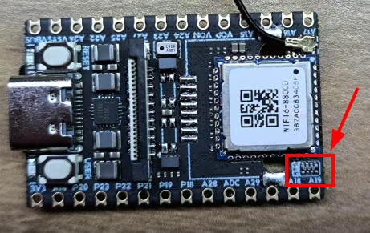
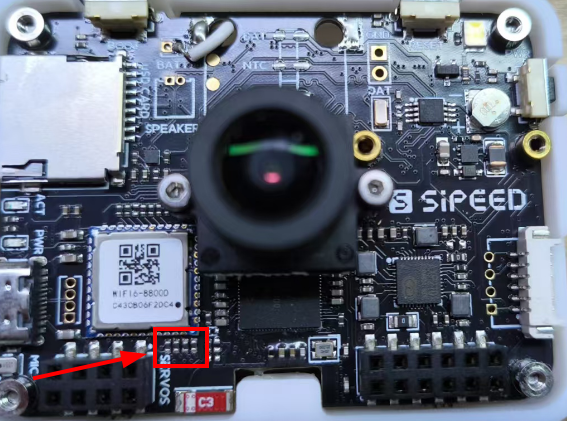

中文
中文MaixCAM 蓝牙使用介绍
2026-01-12
更新历史
| 日期 | 版本 | 作者 | 更新内容 |
|---|---|---|---|
| 2026-01-12 | 1.0.1 | lxowalle | 更新使用蓝牙的方法 |
| 2025-04-08 | 1.0.0 | lxowalle | 初版文档 |
介绍
蓝牙是一种常见的短距离无线通信技术，主要用于在两个或多个设备之间建立低功耗、点对点或局部网络的连接。它工作在2.4GHz的频段，最初被设计来替代有线数据线，实现设备之间的小量数据传输。在现代生活中，蓝牙已经成为我们日常使用频率极高的一种技术。例如，当我们在驾车时将手机连接到车载蓝牙系统，可以实现免提通话或播放音乐；使用蓝牙耳机听音乐或打电话时，摆脱了传统耳机线的束缚；在智能家居中，通过蓝牙与门锁、灯光、温湿度传感器等设备联动，构建便捷、高效的居住环境。
使用方法
注意:
MaixPy v4.12.4及以后的版本支持
使能蓝牙
默认蓝牙功能没有使能,需要运行下面的命令来使能蓝牙
bluetoothctl power on
也可以运行下面的命令让每次上电后自动使能蓝牙
echo "bluetoothctl power on" >> /etc/rc.local
安装依赖包
运行下面的命令安装bleak包
pip install bleak
使用运行蓝牙程序
扫描周围的蓝牙设备
import asyncio
from bleak import BleakScanner
async def main():
devices = await BleakScanner.discover()
for d in devices:
print(d)
asyncio.run(main())
连接蓝牙
import asyncio
from bleak import BleakClient
address = "24:21:32:e3:01:87"
MODEL_NBR_UUID = "1A2A"
async def main(address):
async with BleakClient(address) as client:
model_number = await client.read_gatt_char(MODEL_NBR_UUID)
print(f"Model Number: {model_number.decode()}")
asyncio.run(main(address))
这里只介绍了bleak库对蓝牙的基础用法, 更多关于bleak的使用方法请参考这里
使用方法(旧版, 不推荐)
注意:
MaixPy v4.12.3以及以前的版本支持
使用准备
对于 MaixCAM和MaixCAM-Pro内置了AIC8800D WIFI/蓝牙双模芯片，但是由于IO资源紧张，默认没有连通主控和蓝牙。如果想要使用蓝牙，则需要将GPIOA18,GPIOA19,GPIOA28,GPIOA29与蓝牙的通路间各焊接一颗0欧电阻。
MaixCAM焊接0欧电阻的位置如下图所示：

MaixCAM Pro焊接0欧电阻的位置如下图所示：

注意下文主要通过命令行描述蓝牙基础，如果有更多开发需求的同学请先自己探索一下～
使能蓝牙
hciattach -n /dev/ttyS1 any 1500000 &
hciconfig hci0 up
连接蓝牙鼠标
这里使用bluetoothctl工具配置蓝牙
bluetoothctl # 启动bluetoothctl
## 在bluetoothctl的终端下输入下面命令 ##
power on # 开启蓝牙
agent on # 开启 agent
default-agent # 设置为默认代理
scan on # 扫描设备
# 扫描时找到需要连接的蓝牙MAC地址
pair {设备的MAC地址} # 配对设备
trust {设备的MAC地址} # 信任设备
connect {设备的MAC地址} # 连接设备
# 连接成功后退出
exit
验证鼠标数据
# 执行hcidump命令，可以观察到终端打印所有hci消息
hcidump
# 执行btmon命令，同样可以观察到捕获的HCI事件
btmon